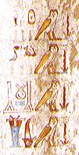

Hieroglyphs
Hieroglyphs

Hieroglyphs are the signs used in ancient Egyptian hieroglyphic writing. The hieroglyphic script was used to record important information in tombs.
These hieroglyphs read,
'One thousand loaves of bread,
One thousand oxen and ducks,
One thousand alabaster jars of perfume and rolls of linen,
One thousand jars of incense'
Nebamun hoped to have bread, meat, perfume, linen and incense in the afterlife. In order to make sure that he would have them, he had these lines written on the walls of his tomb.
Back...